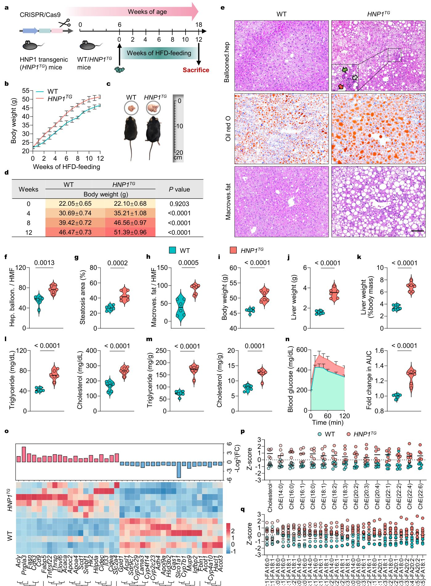
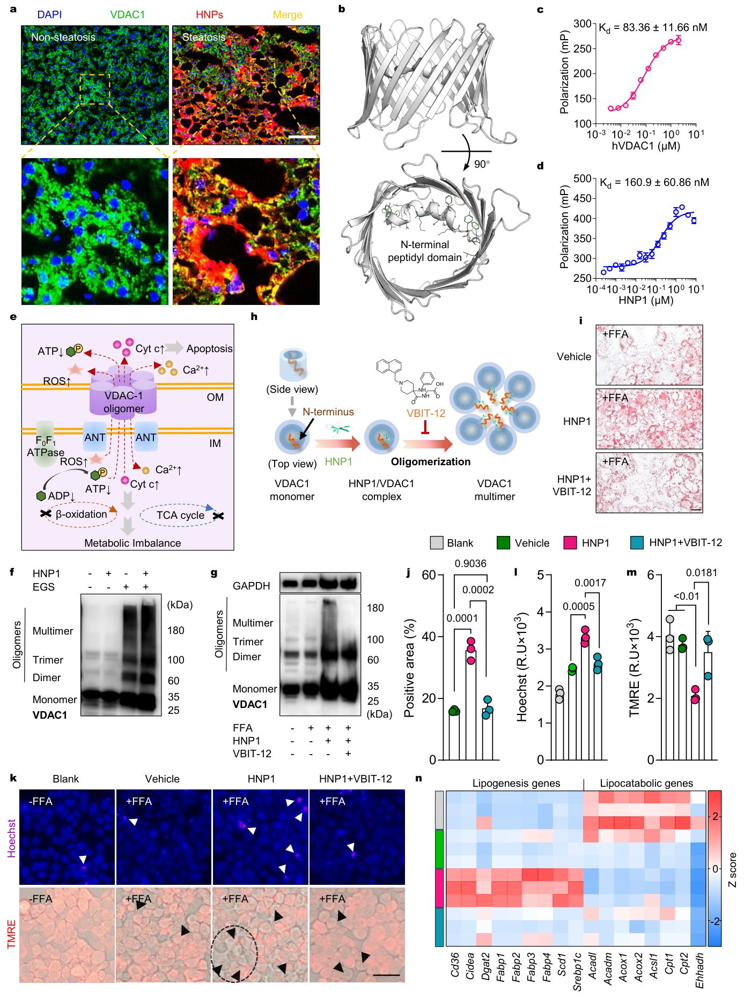
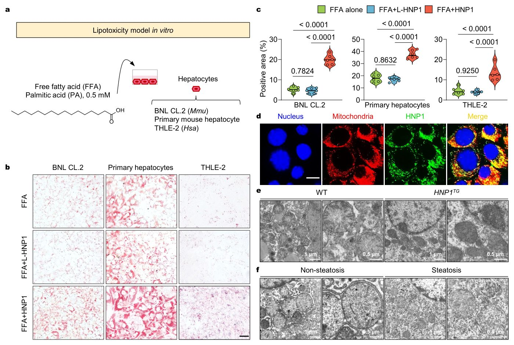

Neytrofillar jigar yog'lanishini qanday qo'zg'atadi

Rasmning to'liq tavsifi
1-rasm. Jigarda HNP1 infiltratsiyasining kuchayishi klinik bemorlarda jigar steatozi bilan bog'liq. (a) Inson jigar kesmalarida jigar steatozining turli darajalarida HNP darajalari va taqsimotini ko'rsatuvchi vakillik IHC tasvirlari. Masshtab chizig'i: 100 mkm. (b) Jigar steatozi bo'lmagan (n = 8) yoki yengil (n = 14) va og'ir steatozli (n = 7) bemorlarning jigar kesmalarini IHC baholash, shuningdek, ushbu namunalardagi IHC musbat hududlaridan normallashtirilgan HNP darajalarining yarim miqdoriy tahlili. (c-d) Jigar HNP darajalarining steatoz maydoni (c) va NAFLD faollik ko'rsatkichlari (d) bilan korrelyatsion tahlili. (e) Minimal, yengil va og'ir jigar steatozi guruhlaridan olingan klinik namunalardagi differensial ifodalangan genlarni (DEG) ko'rsatuvchi ko'p vulqonli grafiklar. (f) O'n oltita inson jigar namunasida lipid transporti va metabolizmi, P450, fibroz va yallig'lanish bilan bog'liq genlarning ifodalanish o'zgarishlarini ko'rsatuvchi RNA-seq profillari, nisbiy HNP darajalari ustunli diagrammalar sifatida qo'shilgan. (g-j) Nisbiy HNP tarkibi va lipid transporti (g), lipogenez (h), β-oksidlanish (i) va lipid to'planishi (j) bilan bog'liq genlarning ifodalanishi o'rtasidagi korrelyatsiyani ko'rsatuvchi sochilish diagrammalari. Determinatsiya koeffitsientlari (R2) va P qiymatlari ko'rsatilgan. Statistik ahamiyatlilik ko'p qirrali taqqoslashlar uchun Bonferroni tuzatishi bilan bir tomonlama dispersiya tahlili yordamida hisoblab chiqilgan.
Metabolik kasalliklar fonida jigarga neytrofillar — tug'ma immunitet hujayralari kirib boradi. Ilgari ularning bu jarayondagi roli noaniq edi. Yangi tadqiqot shuni ko'rsatadiki, neytrofil oqsillari gepatotsitlar mitoxondriyalarini shikastlab, yog' to'planishiga va kasallikning og'irlashishiga olib keladi.
Asosiysi
- Neytrofil alfa-defensinlari jigar mitoxondriyalarida VDAC1 multimerizatsiyasini qo'zg'atadi
- To'qimalardagi HNP miqdori bemorlarda steatoz og'irligi bilan bog'liq
- HNP-VDAC1 o'zaro ta'sirini bloklash sichqonlarda steatogepatitni to'xtatadi
Batafsil
Metabolik disfunksiya bilan bog'liq steatotik jigar kasalligi (MASLD) lipidlarning to'planishi va keyingi yallig'lanish bilan tavsiflanadi. Tadqiqotchilar MASLD bilan og'rigan bemorlarning biopsiyalarini tahlil qilib, to'qimalardagi inson neytrofil peptidlarining (HNP yoki alfa-defensinlar) miqdori va steatoz og'irligi o'rtasida to'g'ridan-to'g'ri bog'liqlikni aniqladilar. In vitro tajribalarida HNP gepatotsitlarga kirib, mitoxondriyalarning tashqi membranasidagi VDAC1 (potensialga bog'liq anion kanali 1) oqsilining multimerizatsiyasini keltirib chiqarishi ko'rsatildi. Bu organellalar faoliyatining buzilishiga va lipidlar to'planishiga olib keladi.
Gipotezani tekshirish uchun HNP1 ifodalovchi transgen sichqonlar ishlatildi. Standart ratsionda hayvonlar sog'lom qoldi, ammo yog'li parhez fonida ularda semirish va steatogepatit rivojlandi. VDAC1 multimerizatsiyasini bloklaydigan dori vositasini qo'llash patologiyaning oldini oldi. Shunday qilib, HNP jigar lipidlar bilan ortiqcha yuklanganda patogen effektlarga aylanadi.
Cheklovlar
Natijalar transgen sichqonlar va hujayra kulturalarida olingan, bu klinik sinovlarda xavfsizlikni tasdiqlashni talab qiladi.
Maqolaning batafsil tahlili
Annotatsiya
Metabolik disfunksiya bilan bog'liq yog'li jigar kasalligi (MASLD) oddiy steatozdan steatohepatitga o'tayotganda jigar to'qimalariga neytrofillar infiltratsiyasi kuzatiladi. Biroq, neytrofil effektorlari bu o'tishning shunchaki belgisi bo'lib qoladimi yoki uning sababchisi ekanligi noma'lum edi.
Bizning tadqiqotimiz shuni ko'rsatadiki, inson neytrofil peptidlar (HNP) yoki α-defensinlar kasallikning shunchaki kuzatuvchilari emas, balki uning asosiy harakatlantiruvchi kuchlaridir. Jigar gemangiomasi tufayli jarrohlik amaliyotini o'tkazgan va MASLD belgilari bo'lgan bemorlarda jigar biopsiyalaridagi HNP miqdori steatozning gistologik og'irligi bilan korrelyatsiya qiladi. In vitro tajribalarida HNP gepatotsitlarga kirib, mitoxondriyalarning tashqi membranasidagi potensialga bog'liq anion kanali 1 (VDAC1) multimerizatsiyasini qo'zg'atishi, bu esa mitoxondriyal disfunksiya va lipidlar to'planishiga olib kelishi aniqlandi.
Muhim
HNP peptidlar gepatotsitlar mitoxondriyalarida VDAC1 multimerizatsiyasini keltirib chiqaradi, bu esa steatohepatit rivojlanishiga bevosita sabab bo'ladi.
Lipidlar bilan ortiqcha yuklangan parhezda (standart parhezda emas), HNP1 transgen sichqonlarida semizlik va steatohepatit kuchayishi kuzatildi. Bu jarayon HNP ta'siridagi VDAC1 multimerizatsiyasini bloklaydigan og'iz orqali qabul qilinadigan prodori yordamida bartaraf etildi. Ushbu topilmalar neytrofillarning tug'ma immunitetini gepatotsitlar mitoxondriyal disfunksiyasi bilan bog'laydi, himoya qiluvchi HNP'larni lipidlar bilan yuklangan gepatotsitlarda patogen effektorlar sifatida qayta baholaydi va HNP–VDAC1 o'qini MASLD uchun terapevtik nishon sifatida belgilaydi.
Izoh
VDAC1 — mitoxondriyalarning tashqi membranasidagi oqsil kanali bo'lib, metabolitlar transportini boshqaradi; uning nazoratsiz multimerizatsiyasi hujayra energetik almashinuvini buzadi.
Kirish
Metabolik disfunksiya va jigar kasalliklarining rivojlanishi
Metabolik assotsiatsiyalangan steatotik jigar kasalligi (MASLD), ilgari NAFLD deb atalgan, dunyo aholisining 30% gacha qismini qamrab olgan eng keng tarqalgan surunkali jigar kasalligidir. Patologiya oddiy steatozdan (MASL) yallig‘lanish, mitoxondrial disfunksiya, endoplazmatik retikulum stressi va fibroz bilan kechadigan steatogepatitgacha (MASH) bo‘lgan spektrni o‘z ichiga oladi, bu esa sirroz va gepatotsellyulyar karsinoma xavfini sezilarli darajada oshiradi. Oddiy steatozning MASHga o‘tish mexanizmlari jigar metabolizmi sohasidagi asosiy yechilmagan muammo hisoblanadi.
Muhim
Steatozdan MASHga o‘tish yallig‘lanish jarayonlari bilan bog‘liq bo‘lib, bunda aylanib yuruvchi leykotsitlarning 50–70% ini tashkil etuvchi neytrofillarning roli yetarlicha o‘rganilmagan, garchi ular yallig‘lanishda to‘qimalarga massiv ravishda kirib borish qobiliyatiga ega bo‘lsa ham.
Neytrofillar immunitet tizimining birinchi «javobgarlari» bo‘lsa-da, ularning MASLD patogenezidagi roli rezident makrofaglarga qaraganda kamroq o‘rganilgan. MASLDda neytrofillar qon oqimidan jigar to‘qimalariga faol migratsiya qilib, yallig‘lanishni kuchaytiradi. Himoya vazifalarini bajargandan so‘ng, bu hujayralar dasturlashtirilgan o‘limga uchraydi va α-defensinlar 1–4 (HNP 1–4) ni chiqaradi. Inson organizmida kuniga 10–15 mg/kg tana vazniga ishlab chiqariladigan bu kationli peptidlar an’anaviy ravishda mikroblarga qarshi vositalar deb hisoblangan. Biroq, ularning immun javob tugagandan keyingi roli noaniq bo‘lib qolmoqda.
Defensinlar va mitoxondrial disfunksiya
Jigar kasalliklarida defensinlarning roli haqidagi mavjud ma’lumotlar qarama-qarshidir: ba’zi tadqiqotlar HNP1-3 ning yuqori darajasini fibroz og‘irligi bilan bog‘lasa, boshqalari giperxolesterinemiyada himoya ta’sirini ko‘rsatadi. Mualliflar HNP shunchaki yallig‘lanish markerlarimi yoki gepatotsitlarga ta’sir qiluvchi faol patologiya qo‘zg‘atuvchilarimi degan savolni o‘rtaga tashlaydi. Ularning ehtimoliy nishoni — mitoxondriyalarning tashqi membranasidagi asosiy oqsil VDAC1 bo‘lib, u metabolitlar va Ca2+ ionlari transporti uchun javobgardir.
Izoh
VDAC1 (potensialga bog‘liq anion kanali 1) — bu mitoxondriyaning «darvozasi»; uning oligomerizatsiyasi (molekulalarning yopishib qolishi) organella ishini buzadi, bu esa hujayra o‘limi va metabolik nosozliklarga olib keladi.
Ishda HNP ning steatoz bilan korrelyatsiyasini tahlil qilish uchun jigar gemangiomasi tufayli operatsiya qilingan bemorlarning jigar biopsiyasi namunalari ishlatilgan. HNP1-transgen sichqonlar ustida o‘tkazilgan tadqiqotlar shuni ko‘rsatdiki, yuqori yog‘li parhezda ularda steatogepatit va semirish rivojlanadi, standart ozuqada esa fenotip namoyon bo‘lmaydi. VDAC1 oligomerizatsiyasini bloklaydigan og‘iz orqali qabul qilinadigan prodori vositasini qo‘llash bu ta’sirlarni bartaraf etadi. Shunday qilib, «neytrofil defensinlari — VDAC1» o‘qi gepatotsitlar lipidlar bilan ortiqcha yuklanganda MASLD rivojlanishining hal qiluvchi bo‘g‘ini hisoblanadi.
Natijalar
Jigardagi HNP darajasining oshishi klinik bemorlarda jigar steatozi og‘irligi bilan kuchli korrelyatsiyada
Neytrofillar tomonidan ishlab chiqariladigan alfa-defenzinlarning asosiy qismini HNP 1-3 tashkil etadi, HNP4 esa juda kam miqdorda ifodalanadi (Rasm S1). HNP 1-3 ning jigar steatozidagi klinik ahamiyatini baholash uchun jigar gemangiomasi bilan operatsiya qilingan 29 nafar bemordan biopsiya namunalari olindi. To‘qimalar Oil Red O (ORO) bo‘yash maydoniga qarab guruhlarga ajratildi: steatozsiz (<5%, n=8), yengil steatoz (5-33%, n=14) va og‘ir steatoz (>33%, n=7). Gistopatologik tahlil (H&E, ORO, Masson trixromi, Sirius red) shuni ko‘rsatdiki, steatoz kuchayishi bilan ballonli distrofiya va makrovezikulyar steatoz belgilari ortib boradi (Rasm S2a-b), bu NAFLD faollik ballari (NAS) va fibrozning kuchayishi bilan tasdiqlanadi (Rasm S2c-d). Sirius red bo‘yash usuli IV turdagi kollagenning to‘planishini ko‘rsatdi, og‘ir steatozda esa I turdagi kollagenning ko‘payishi kuzatildi, bu sirroz xavfini bashorat qiladi (Rasm S2a, S2e).
Muhim
Og‘ir steatozda jigardagi HNP 1-3 darajasi nazorat guruhlariga qaraganda sezilarli darajada yuqori bo‘lib, steatoz maydoni (P < 0.0001, R2 = 0.8579), NAS (P < 0.0001, R2 = 0.6611) va fibroz (P < 0.0001, R2 = 0.6038) bilan kuchli korrelyatsiyada.
Immunogistokimyoviy (IGX) tahlil shuni ko‘rsatdiki, og‘ir steatoz guruhida namunalarning 57,1% kuchli va 42,9% o‘rtacha ijobiy natija bergan, steatozsiz guruhda esa 100% namunalar kuchsiz ijobiy bo‘lgan (Rasm 1b, Rasm S2f). Transkriptomik tahlil differensial ifodalangan genlar (DEG) sonining 216 tadan (steatozsiz vs yengil) 2639 tagacha (steatozsiz vs og‘ir) oshganini aniqladi (Rasm 1e). Og‘ir steatozda lipid transporti, metabolizm, fibroz va yallig‘lanish yo‘llari faollashgan, P450 genlari esa susaygan (Rasm 1f). Lipid almashinuvi genlari (Apoe, Cd36, Fbp1, Slc27a2, Acaca, Acly, Dgat2, Srebf2, Acot7, Acsl4, Plin2, Pnpla4) HNP darajasi bilan korrelyatsiya qilgan (Rasm 1g-j).
Rasmning to'liq tavsifi
1-rasm. Jigarda HNP1 infiltratsiyasining kuchayishi klinik bemorlarda jigar steatozi bilan bog'liq. (a) Inson jigar kesmalarida jigar steatozining turli darajalarida HNP darajalari va taqsimotini ko'rsatuvchi vakillik IHC tasvirlari. Masshtab chizig'i: 100 mkm. (b) Jigar steatozi bo'lmagan (n = 8) yoki yengil (n = 14) va og'ir steatozli (n = 7) bemorlarning jigar kesmalarini IHC baholash, shuningdek, ushbu namunalardagi IHC musbat hududlaridan normallashtirilgan HNP darajalarining yarim miqdoriy tahlili. (c-d) Jigar HNP darajalarining steatoz maydoni (c) va NAFLD faollik ko'rsatkichlari (d) bilan korrelyatsion tahlili. (e) Minimal, yengil va og'ir jigar steatozi guruhlaridan olingan klinik namunalardagi differensial ifodalangan genlarni (DEG) ko'rsatuvchi ko'p vulqonli grafiklar. (f) O'n oltita inson jigar namunasida lipid transporti va metabolizmi, P450, fibroz va yallig'lanish bilan bog'liq genlarning ifodalanish o'zgarishlarini ko'rsatuvchi RNA-seq profillari, nisbiy HNP darajalari ustunli diagrammalar sifatida qo'shilgan. (g-j) Nisbiy HNP tarkibi va lipid transporti (g), lipogenez (h), β-oksidlanish (i) va lipid to'planishi (j) bilan bog'liq genlarning ifodalanishi o'rtasidagi korrelyatsiyani ko'rsatuvchi sochilish diagrammalari. Determinatsiya koeffitsientlari (R2) va P qiymatlari ko'rsatilgan. Statistik ahamiyatlilik ko'p qirrali taqqoslashlar uchun Bonferroni tuzatishi bilan bir tomonlama dispersiya tahlili yordamida hisoblab chiqilgan.
HNP1 transgen sichqonlar yuqori yog‘li parhezda MASLD rivojlanishiga moyil
Sichqonlarda neytrofillar defenzin ishlab chiqarmagani uchun, CRISPR-Cas9 va neytrofil elastaza promotoridan foydalanib, HNP1 transgen (HNP1TG) sichqonlar yaratildi. DEFA1 geni kiritilgach (Rasm S3), 6 haftalik erkak HNP1TG va yovvoyi turdagi (WT) sichqonlar 12 hafta davomida yuqori yog‘li parhez (HFD) bilan boqildi (Rasm 2a). Oziq-ovqat iste’moli bir xil bo‘lishiga qaramay (Rasm S4a), HNP1TG sichqonlar tezroq vazn to‘pladi (Rasm 2b, S4b), bu tana va jigar hajmining kattalashishiga olib keldi (Rasm 2c). Transgen sichqonlar 4, 8 va 12-haftalarda WT nazorat guruhiga nisbatan mos ravishda 14,7%, 18,1% va 10,6% og‘irroq bo‘lgan (Rasm 2d). Nazorat parhezida (CFD) fenotipik farqlar kuzatilmadi (Rasm S5a-d).


Rasmning to'liq tavsifi
2-rasm. HNP1 transgen sichqonlarida MASLDga moyillikning oshishi. (a) MASLD rivojlanishida HNP1 rolini baholash uchun eksperimental dizayn. MASLDni qo'zg'atish uchun 12 hafta davomida yuqori yog'li parhez (HFD) bilan oziqlangan, vazni 21-23 g bo'lgan olti haftalik erkak WT va HNP1TG C57BL/6J sichqonlari, shundan so'ng ular qurbon qilindi va chuqur tahlil uchun to'qima namunalari yig'ildi. (b) HFD bilan oziqlantirish vaqtida haftalik o'lchangan WT va HNP1TG sichqonlarining tana vazni (guruhda n = 10 sichqon). (c) 12 haftalik HFD bilan oziqlantirishdan keyin WT va HNP1TG sichqonlarining (pastda) va ularning jigarining (tepada) vakillik fotosuratlari. (d) 0, 4, 8 va 12-haftalarda WT va HNP1TG sichqonlari o'rtasidagi tana vazni va statistik taqqoslashlar xulosasi. (e) H&E va ORO bilan bo'yalgan sichqon jigar kesmalarining vakillik tasvirlari. Kulrang, yashil va qizil o'qlar mos ravishda yallig'lanish infiltratsiyasi, gepatotsitlar ballonlanishi (Ballooned.hep) yoki makrovezikulyar yog'ni (Macroves.fat) ko'rsatadi. Masshtab chizig'i: 200 mkm. (f-h) ImageJ yordamida yuqori kattalashtirish maydonida (HMF) ballonlangan gepatotsitlar (f), ORO-musbat maydon foizi (g) va makrovezikulyar yog'li gepatotsitlar (h) miqdoriy tahlili, har bir kesma uchun uchta maydon asosida (guruhda n = 6 sichqon). (i-k) 12 haftalik HFD bilan oziqlantirishdan keyin WT va HNP1TG sichqonlarining tana vazni (i), jigar vazni (j) va jigar vazni/tana vazni nisbati (k) (guruhda n = 6 sichqon). (l-m) 12 haftalik HFD bilan oziqlantirishdan keyin sichqonlarning zardobidagi (l) va jigaridagi (m) triglitserid va xolesterin darajalari (guruhda n = 6 sichqon). (n) 12 hafta davomida HFD bilan oziqlantirishdan keyin WT va HNP1TG sichqonlarida glyukozaga chidamlilik testi (chap panel), qon glyukozasining egri chizig'i ostidagi maydonning (AUC) karrali o'zgarishlari bilan (guruhda n = 6 sichqon) (o'ng panel). (o) WT va HNP1TG sichqonlarining jigarida lipid metabolizmi bilan bog'liq DEG ifodalanishi namunalarini ko'rsatuvchi issiqlik xaritasi (guruhda n = 6 sichqon). Rang kaliti ifodalanish darajalarini ko'rsatadi. (p-q) WT va HNP1TG sichqonlarining jigarida xolesterindan olingan (p) va triglitseriddan olingan (q) lipid turlari darajalarining metabolomik tahlili (guruhda n = 6 sichqon). Barcha ma'lumotlar o'rtacha ± SD sifatida ko'rsatilgan. Statistik ahamiyatlilik juftlashtirilmagan, 2 tomonlama Student t-testi bilan tahlil qilindi.
Izoh
Transgen sichqonlar — genetik muhandislik yordamida ma’lum bir gen kiritilgan yoki o‘zgartirilgan hayvonlar. [!warning] Tadqiqot HNP1 ning metabolizmga ta’sirini ko‘rsatsa-da, odamlardagi immun tizimi farqlari tufayli natijalar ehtiyotkorlik bilan talqin qilinishi kerak.
Jigar va yog‘ to‘qimalaridagi patologik o‘zgarishlar
Yuqori yog‘li parhez (HFD) bilan 12 hafta davomida boqilgan sichqonlar tunda och qoldirilgandan so‘ng evtanaziya qilindi. HNP1TG transgen sichqonlarida jigar steatozining yaqqol belgilari: gepatotsitlarning ballonli distrofiyasi, makrovezikulyar yog‘lanish va yallig‘lanish infiltratsiyasi kuzatildi (2e-rasm). Yarim miqdoriy tahlil ushbu patologik ko‘rsatkichlarning sezilarli darajada kuchayganini tasdiqladi (2f-h rasmlar). Shu bilan birga, tana va jigar vazni ortdi (2i-j rasmlar), bunda jigar indeksi (jigar vaznining tana vazniga nisbati) transgen sichqonlarda WT nazorat guruhiga nisbatan kamida ikki baravar yuqori bo‘ldi (2k-rasm). Qizig‘i shundaki, HNP1TG sichqonlarida epididimal yog‘ to‘qimasi (EAT) vazni taxminan 25% ga kamaygan (SN c-d rasmlari).
Muhim
HNP1TG sichqonlarida jigar indeksi ikki baravar ortishi va yog‘ to‘qimasi 25% ga kamayishi bilan kechadigan og‘ir jigar steatozi rivojlandi.
EAT yog‘ to‘qimasida adipotsitlarning kattalashishi va «tojga o‘xshash tuzilmalar» (CLS) paydo bo‘lishi aniqlandi, bu lipid almashinuvining tizimli qayta qurilishi va surunkali yallig‘lanishdan dalolat beradi (SN e-g rasmlari). Klinik jihatdan, barcha HNP1TG sichqonlarida MASH bosqichi (NAS > 5) rivojlandi, WT sichqonlarida esa bunday holat kuzatilmadi (SN h-rasm). Transgen sichqonlar jigarida fibroz tolalari kesmaning taxminan 9% qismini egallagan bo‘lsa, WT sichqonlarida fibroz deyarli aniqlanmadi (SN i-j rasmlari).
Izoh
MASH (metabolik assotsiatsiyalangan steatogepatit) — jigar yallig‘lanishi va hujayra shikastlanishi bilan kechadigan jigar yog‘lanishining progressiv shakli.
Metabolik buzilishlar va omiks tahlili
HNP1TG sichqonlarida zardob va jigarda triglitseridlar va xolesterin darajasi yuqori ekanligi (2l-m rasmlar), jigar shikastlanishi belgilari bilan birga aniqlandi (SN k-l rasmlari). HNP1TG sichqonlarida och qoringa qon glyukozasi 50% ga oshdi (SN m-rasm). Glyukozaga tolerantlik testi (GTT) glyukozani tartibga solish qobiliyatining pasayganini (2n-rasm) va insulin rezistentligi rivojlanganini ko‘rsatdi (SN n-o rasmlari). Nazorat parhezida (CFD) guruhlar o‘rtasida sezilarli farqlar kuzatilmadi (SN e-t rasmlari).
Ehtiyot bo'ling
Tadqiqot sichqonlar modelida o‘tkazilgan, shuning uchun natijalarni inson metabolizmiga to‘g‘ridan-to‘g‘ri o‘tkazishda ehtiyotkorlik talab etiladi.
Jigar transkriptomik va metabolomik tahlili HNP1TG va WT guruhlari o‘rtasida asosiy komponentlar tahlili (PCA) bo‘yicha aniq farqlarni ko‘rsatdi (SN 6-rasm). Lipid almashinuvi genlaridagi o‘zgarishlardan tashqari (2o-rasm), transgen sichqonlarda xolesterin va triglitseridlarning uzun zanjirli turlari ko‘paygan. Bu yog‘ kislotalarini mitoxondriyaga tashuvchi L-karnitin transport tizimining buzilganligini anglatadi (2p-q rasmlar). Natijalar HNP1 ekspressiyasi MASLD rivojlanishiga moyillikning asosiy omili ekanligini tasdiqlaydi.
HNP1 gepatotsitlarda lipidlar to‘planishiga yordam berib, mitoxondrial disfunksiyani keltirib chiqaradi
HNP1 ning jigar steatozidagi salbiy ta’sirini in vitro o‘rganish uchun BNL CL.2 sichqon gepatotsitlari liniyasi, birlamchi sichqon gepatotsitlari va THLE-2 inson gepatotsitlari liniyasi yordamida lipotoksiklik modeli yaratildi. Hujayralar 0,5 mM palmitin kislotasi (FFA) bilan inkubatsiya qilindi (3a-rasm). Tajribalar shuni ko‘rsatdiki, 4 mkM HNP1 qo‘shilishi barcha uch turdagi hujayralarda lipidlar to‘planishini sezilarli darajada oshirdi, ammo chiziqli L-HNP1 peptidi bir xil konsentratsiyada bunday ta’sir ko‘rsatmadi (3b-c-rasmlar). Bu shuni anglatadiki, HNP1 ning lipidlar to‘planishini kuchaytirish qobiliyati uning tuzilishiga bog‘liq.
Muhim
HNP1 lipotoksik stress sharoitida gepatotsitlarda lipidlar to‘planishini kuchaytiradi va bu ta’sir peptidning strukturaviy xususiyatlariga bog‘liq.
Molekulyar mexanizmlarni tushunish uchun 4 mkM HNP1 ta’sirida birlamchi sichqon gepatotsitlarida RNA-seq tahlili o‘tkazildi. FFA bilan ishlov berilgan hujayralarning transkripsiya profili nazorat guruhiga yaqinroq bo‘lib chiqdi, FFA va HNP1 birgalikda qo‘llanilganda esa immunometabolik yo‘llarning buzilishi kuzatildi (S7a-rasm). GO tahlili lipid almashinuvi, energiya gomeostazi va yallig‘lanish bilan bog‘liq genlar ifodasining o‘zgarganini ko‘rsatdi (S7b-rasm). Tarmoq tahlili bu o‘zgarishlarni MASLD va mitoxondrial jarayonlar (ion kanallari va oqsil komplekslari) bilan bog‘ladi (S7c-rasm).
Izoh
RNA-seq — hujayradagi barcha genlarning faolligini bir vaqtning o‘zida baholash imkonini beruvchi usul, GO-tahlil esa bu genlarni biologik funksiyalariga ko‘ra guruhlaydi.
Kationli amfifil molekula sifatida HNP1 manfiy zaryadlangan mitoxondrial membranalar bilan o‘zaro ta’sir qila oladi. FAM bilan belgilangan HNP1 hujayralar ichiga kirib, mitoxondriyalar bilan kolokalizatsiya qilishi tasdiqlandi (3d-rasm). 12 hafta davomida yuqori yog‘li dieta (HFD) olgan HNP1TG sichqonlar jigar to‘qimalarining elektron mikroskopiyasi (TEM) mitoxondriyalarning jiddiy shikastlanishini: kristalarning yo‘qolishi, o‘lchamlarning kichrayishi va fragmentatsiyani ko‘rsatdi (3e-rasm, S8a-rasm). Xuddi shunday o‘zgarishlar steatozi bo‘lgan bemorlar (n = 6) namunalarida ham aniqlandi (3f-rasm, S8b-rasm). Bu natijalar HNP1 bevosita mitoxondriyalarga ta’sir qilib, steatoz uchun xos bo‘lgan disfunksiyani keltirib chiqarishini isbotlaydi.
Ehtiyot bo'ling
Tadqiqot hujayra liniyalari, transgen sichqonlar va cheklangan klinik namunalar ma’lumotlariga asoslangan, shuning uchun natijalarni inson patologiyasining barcha shakllariga to‘liq tatbiq etishda ehtiyotkorlik talab etiladi.
HNP1 VDAC1 ning N-terminal spiral domenini nishonga olib, uning oligomerizatsiyasini kuchaytiradi va gepatotsitlarda lipid almashinuvini buzadi.
Alfa-defensinlar turli molekulyar nishonlar, jumladan membrana retseptorlari bilan o‘zaro ta’sir qilib, immun javobni modulyatsiya qiladi. Mitoxondriyalardagi HNP1 nishonini aniqlash uchun mualliflar VDAC1 oqsiliga e’tibor qaratishdi. Transkriptomik tahlil potensialga bog‘liq ion kanallari regulyatsiyasi bilan bog‘liq yo‘llarning boyiganligini ko‘rsatdi (Rasm SN). HNP1 va VDAC1 ning bemorlar jigar to‘qimalarida birga joylashishi (kolokalizatsiya) aniqlandi (Rasm 4a). Tozalangan VDAC1 (N-terminal spiral domeniga ega β-barrel oqsili, Rasm 4b) FAM-yorliqli HNP1 bilan floresans polyarizatsiyasi usulida tekshirildi. HNP1 VDAC1 bilan K_d = 83,4 nM bo‘lgan yuqori affinlik bilan bog‘lanishi tasdiqlandi (Rasm 4c).


Rasmning to'liq tavsifi
4-rasm. HNP1 gepatotsitlarda lipid metabolizmining buzilishiga olib keladigan oligomerizatsiyani rag'batlantirish uchun VDAC1 ning N-terminal spiral domenini nishonga oladi. (a) Jigar steatozi bo'lgan yoki bo'lmagan klinik bemorlarning jigar kesmalarining immunofloresan tasvirlari. Moviy, yadro; yashil, VDAC1; qizil, HNP1. Masshtab chizig'i: 100 mkm. (b) Inson VDAC1 kristalli tuzilishi (PDB: 6G6U). (c-d) Floresan polarizatsiyasi bilan baholangan HNP1 ning to'liq uzunlikdagi inson VDAC1 (c) va 26-aminokislotali VDAC1 N-terminal peptidi (d) bilan bog'lanish yaqinligi. Ma'lumotlar uchta biologik takroriydan o'rtacha ± SEM sifatida taqdim etilgan. (e) VDAC1 oligomerizatsiyasi natijasida yuzaga keladigan mexanik va funktsional natijalarning sxematik diagrammasi. (f) Tozalangan inson VDAC1 ning HNP1 tomonidan qo'zg'atilgan oligomerizatsiyasi elektroforez vaqtida oligomerlarni barqarorlashtirish uchun EGS o'zaro bog'lovchi reagent bilan ishlov berilgandan so'ng immunobloting yordamida vizuallashtirildi. (g) 0,5 mM palmitik kislota, 4 mkm HNP1 yoki 20 mkm VBIT-12 mavjudligida yoki yo'qligida sichqon birlamchi gepatotsitlarida VDAC1 oligomerizatsiyasi immunobloting yordamida vizuallashtirildi. (h) HNP1 o'zining N-terminal domeni bilan o'zaro ta'sir qilish orqali VDAC1 oligomerizatsiyasini rag'batlantiradigan taklif qilingan modelning sxematik diagrammasi. (i) 4 mkm HNP1 va/yoki 20 mkm VBIT-12 mavjudligida yoki yo'qligida 0,5 mM palmitik kislota bilan ishlov berilgan ORO bilan bo'yalgan gepatotsitlarning vakillik tasvirlari. Masshtab chizig'i, 100 mkm. (j) ORO-musbat maydon foizlari asosida gepatotsitlarda lipid to'planishining yarim miqdoriy tahlili (n = 3 biologik takroriy). Ma'lumotlar o'rtacha ± SD sifatida ko'rsatilgan. Statistik ahamiyatlilik ko'p qirrali taqqoslashlar uchun Bonferroni tuzatishi bilan bir tomonlama dispersiya tahlili yordamida tahlil qilindi. (k) Nazorat sifatida vosita mavjudligida, 4 mkm HNP1 yoki 4 mkm HNP1 plyus 20 mkm VBIT-12 bilan FFA bilan ishlov berilgan yoki ishlov berilmagan (bo'sh) Hoechst (apoptoz) va TMRE (mitoxondriyal potentsial) bilan bo'yalgan gepatotsitlarning vakillik tasvirlari. Oq o'qlar, apoptotik gepatotsitlar. Qora o'qlar, membrana potentsiali depolarizatsiyasiga ega gepatotsitlar. Masshtab chizig'i: 50 mkm. (l-m) Gepatotsitlardagi Hochest (l) va TMRE (m) floresan intensivligining yarim miqdoriy tahlili (n = 3 biologik takroriy). Ma'lumotlar o'rtacha ± SD sifatida ko'rsatilgan. Statistik ahamiyatlilik ko'p qirrali taqqoslashlar uchun Bonferroni tuzatishi bilan bir tomonlama dispersiya tahlili yordamida tahlil qilindi. (n) Turli xil muolajalar bilan gepatotsitlarda lipogenez va lipid katabolizmi bilan bog'liq genlarning transkripsion darajalari. Nisbiy mRNA darajalari 2-ΔΔCT matematik modeliga ko'ra bo'sh nazoratlarga nisbatan miqdoriy aniqlash sifatida hisoblab chiqilgan. Yakuniy ma'lumotlar Z-ball bilan normallashtirildi va mikrochipli issiqlik xaritasida Z-ball sifatida ko'rsatildi. Har bir guruh uchun n = 3 biologik takroriy.
Muhim
HNP1 VDAC1 bilan K_d = 83,4 nM affinlikda to‘g‘ridan-to‘g‘ri bog‘lanadi va uning N-terminal spiral domenini nishonga oladi.
Bog‘lanish joyini aniqlash uchun N-terminal spiral domenini qamrab oluvchi 26 aminokislotali NTP peptidi ishlatildi. HNP1 NTP bilan K_d = 161 nM affinlikda bog‘landi (Rasm 4d). VDAC1 oksidlovchi stress sharoitida oligomerizatsiyaga moyil bo‘lib, mitoxondriya tashqi membranasida Ca²⁺, mtDNA, sitoxrom c va ROS transporti uchun kanallar hosil qiladi (Rasm 4e). Bu jarayonlar lipoapoptoz va insulin rezistentligiga olib keladi. HNP1 VDAC1 dimerlari, trimerlari va yuqori tartibli multimerlari hosil bo‘lishini kuchaytirishi in vitro sharoitda tasdiqlandi (Rasm 4f). 0,5 mM FFA va 4 mкM HNP1 mavjud bo‘lgan sichqon gepatotsitlarida VDAC1 oligomerizatsiyasi kuchaydi, bu VBIT-12 inhibitori yordamida bartaraf etildi (Rasm 4g-h).
Izoh
VBIT-12 — VDAC1 oligomerizatsiyasini bloklovchi maxsus inhibitor bo‘lib, u mitoxondriyal disfunksiyaning oldini olish uchun qo‘llaniladi.
TEM usuli yordamida 0,5 мкМ konsentratsiyada HNP1 va NTP aralashmasi kattalashgan oligomerlar hosil qilishi ko‘rsatildi (Rasm SN). Dinamik yorug‘lik sochish (DLS) usuli 0,1, 0,5, 2,5 va 12,5 мкМ konsentratsiyalarda gidrodinamik diametrning (d_h) doza-bog‘liq o‘sishini tasdiqladi (Rasm SN). VBIT-12 HNP1 keltirib chiqargan steatoz, apoptoz va membrana potensiali depolarizatsiyasini samarali kamaytirdi (Rasm 4i-m). RT-qPCR tahlili shuni ko‘rsatdiki, HNP1 FFA ishtirokida lipid katabolizmi genlarini pasaytiradi va lipogenez genlarini kuchaytiradi, VBIT-12 esa bu profilni tiklaydi (Rasm 4n).
Ehtiyot bo'ling
Tadqiqot sichqon gepatotsitlari va in vitro modellarda o‘tkazilgan, shuning uchun natijalarni in vivo sharoitda ehtiyotkorlik bilan talqin qilish kerak.
HNP1 va VDAC1 o‘rtasidagi o‘zaro ta’sirning tarkibiy asoslari
HNP1 ning VDAC1 N-terminal spiral domeni bilan o‘zaro ta’sirini o‘rganish uchun tadqiqotchilar 15N-yorliqli NTP peptididan foydalanishdi (Rasm SN). Tahlil 2D 1H-15N geteroyadroviy bir kvantli korrelyatsiya (HSQC) YaMR spektroskopiyasi yordamida amalga oshirildi. 10 mM fosfatli buferda (PB) NTP 7,3–9,0 m.d. oralig‘ida cho‘qqilarga ega bo‘lgan α-spiral konformatsiyani namoyon qildi. HNP1 ni NTP ga 0,2:1 molyar nisbatda qo‘shish bir qator rezonans cho‘qqilarining zaiflashishiga va siljishiga olib keldi (Rasm 5a). 40% trifluoroetanol (TFE) ishtirokida cho‘qqilar yanada tarqoq bo‘ldi, bu α-spirallikning kuchayganini ko‘rsatadi; bu sharoitda HNP1 signalning so‘nishiga emas, balki kimyoviy siljishlarga olib keldi.

Rasmning to'liq tavsifi
5-rasm. HNP1 ning VDAC1 N-terminal oligomerizatsiya domeniga bog'lanishi uchun tarkibiy asos. (a) Turli xil bufer sharoitlarida 80 mkm HNP1 mavjudligida va yo'qligida 400 mkm 15N-belgilangan NTP ning 2D (15N, 1H) HSQC spektrlari. (b) 0,5, 1 yoki 2 ekvivalent HNP1 bilan titrlangan NTP spektrlari bilan ustma-ust qo'yilgan 200 mkm 15N-belgilangan NTP ning 2D (15N, 1H) HSQC spektrlari. (c) Inson VDAC1 kristalli tuzilishidan (PDB: 6G6U) olingan NTP tuzilishi, tayoqcha sifatida ko'rsatilgan muhim qoldiqlar bilan. (d) NTP (tepada) va HNP1 (pastda) qoldiqlarining MM/GBSA bog'lanish erkin energiyasiga hissasi. Ma'lumotlar o'rtacha ± SD sifatida taqdim etilgan. (e) HNP1 dimerining kristalli tuzilishi (PDB: 3GNY). (f-g) 4 mkm HNP1 yoki W26A-HNP1 mavjudligida yoki yo'qligida 0,5 mM palmitik kislota bilan ishlov berilgan ORO bilan bo'yalgan birlamchi gepatotsitlarning vakillik tasvirlari (f) va ORO-musbat maydon foizlari asosida gepatotsitlarda lipid to'planishining yarim miqdoriy tahlili (g) (n = 3 biologik takroriy). Masshtab chizig'i, 100 mkm. Ma'lumotlar o'rtacha ± SEM sifatida ko'rsatilgan. Statistik ahamiyatlilik ko'p qirrali taqqoslashlar uchun Bonferroni tuzatishi bilan bir tomonlama dispersiya tahlili yordamida tahlil qilindi. (h-i) Floresan polarizatsiyasi bilan baholangan VDAC1 N-terminal peptidining HNP1 va uning W26A mutantiga bog'lanish yaqinligi (h) va Kd qiymatlari (i). Ma'lumotlar o'rtacha ± SEM sifatida ko'rsatilgan. Statistik ahamiyatlilik ko'p qirrali taqqoslashlar uchun Bonferroni tuzatishi bilan bir tomonlama dispersiya tahlili yordamida tahlil qilindi.
Izoh
HSQC YaMR usuli atom yadrolarining kimyoviy muhitidagi o‘zgarishlarni kuzatish imkonini beradi, bu esa bog‘lanishda ishtirok etuvchi molekula qismlarini aniqlashga yordam beradi.
Oqsillar o‘rtasidagi o‘zaro ta’sir 0,2% natriy dodesilsulfat (SDS) qo‘shilganda butunlay to‘xtadi, bu HNP1 bor va yo‘q holatlarda NTP spektrlarining to‘liq ustma-ust tushishi bilan tasdiqlandi (Rasm 5a). 200 mkM NTP ni 0,5, 1 yoki 2 ekvivalent HNP1 bilan titrlashda A2, V3, T6, A8, L10, K12, S13, A14, V17 va T19 qoldiqlari uchun signallar intensivligining dozaga bog‘liq pasayishi kuzatildi, bu HNP1 ta’sirida NTP oligomerizatsiyasini ko‘rsatadi (Rasm 5b). Eng muhim siljishlar A2, V3, T6, A14 va V17 uchun qayd etildi.
Muhim
YaMR tahlili VDAC1 N-terminal domenining HNP1 bilan bog‘lanishda ishtirok etuvchi muhim qoldiqlarini aniqladi, bu jarayon dozaga bog‘liq va peptid oligomerizatsiyasiga olib keladi.
Ma’lumotlarni tasdiqlash uchun 200-ns molekulyar dinamika (MD) modellashtirildi. MM/GBSA usuli bo‘yicha hisob-kitoblar HNP1 ning C-terminal qoldiqlari bog‘lanish energiyasiga eng katta hissa qo‘shishini va Trp26 asosiy rol o‘ynashini tasdiqladi. W26A-HNP1 mutant analogi bilan o‘tkazilgan eksperimental tekshiruv floresans polarizatsiyasi testida NTP bilan bog‘lanishning sezilarli darajada susayganini ko‘rsatdi. Sichqonlarning birlamchi gepatotsitlarida o‘tkazilgan tajribalarda W26A mutatsiyasi defenzin keltirib chiqaradigan lipidlar to‘planishini sezilarli darajada kamaytirdi, bu Trp26 qoldig‘ining funksional ahamiyatini tasdiqlaydi (Rasm 5e-i).
Ehtiyot bo'ling
Tadqiqot izolyatsiya qilingan peptidlar va birlamchi hujayra kulturalarida o‘tkazilgan, shuning uchun natijalarni murakkab organizm jarayonlariga tatbiq etishda ehtiyotkorlik talab etiladi.
VBIT-12 prodori og‘iz orqali yuborilishi HFD bilan oziqlangan HNP1TG sichqonlarida MASLD rivojlanishining oldini oladi
VBIT-12 ning lipidlar to‘planishini kamaytirishdagi in vitro faolligidan ilhomlanib, biz «HNP1-VDAC1 oligomerizatsiyasi» o‘qidan foydalanishning yangi terapevtik paradigmasini tasdiqlash uchun uning in vivo samaradorligini sinab ko‘rdik. Og‘iz orqali yuborishni osonlashtirish uchun biz VBIT-12 dagi erkin karboksil guruhini esterifikatsiya qilish orqali VBIT-12 prodori (VBIT-12pro) sintez qildik (Rasm S12). Bu modifikatsiya lipofillikni oshirdi, bu esa prodorning ichak membranalaridan o‘tib, jigar tomonidan samarali so‘rilishini ta’minladi, u yerda endogen karboksilesterazalar ester bog‘ini uzib, faol VBIT-12 ni chiqaradi. Rasm S13 da ko‘rsatilganidek, VBIT-12 va ayniqsa VBIT-12pro 100 mkM maksimal konsentratsiyada THLE-2 va BNL CL.2 hujayra liniyalariga nisbatan sitotoksiklik ko‘rsatmadi.
Izoh
Prodor — bu organizmda metabolik o‘zgarishlar natijasida faol shaklga o‘tadigan dori vositasining modifikatsiyalangan turi.
Olti hafta davomida HFD bilan oziqlangan HNP1TG sichqonlariga keyingi 6 hafta davomida kuniga 20 mg/kg VBIT-12pro og‘iz orqali yoki 20 mg/kg VBIT-12 qorin bo‘shlig‘iga inyeksiya qilingan (nazorat guruhlari bilan solishtirganda) (Rasm 6a). Dastlabki 6 haftada barcha guruhlar bir xil tezlikda vazn to‘pladi (Rasm 6b va Rasm S14a-b, S15a). Biroq, davolash boshlangandan so‘ng, VBIT-12 yoki VBIT-12pro guruhlarida vazn ortishi sezilarli darajada sekinlashdi (Rasm S14c va S15b). 8 va 12 haftalik HFD dan so‘ng, VBIT-12pro qabul qilgan sichqonlarning tana vazni nazorat guruhiga nisbatan mos ravishda 8,65% va 13,8% ga pastroq bo‘ldi (Rasm 6c).

Rasmning to'liq tavsifi
6-rasm. VBIT-12 pro-dori vositasini og‘iz orqali yuborish orqali HNP1TG sichqonlarida MASLD kasalligini yengillashtirish. (a) HNP1TG sichqonlarida MASLD ga qarshi VBIT-12 va VBIT-12pro ning in vivo samaradorligini baholash uchun eksperimental dizayn. Og‘irligi 21-23 g bo‘lgan olti haftalik erkak HNP1TG C57BL/6J sichqonlari 6 hafta davomida dori-darmonsiz yuqori yog‘li parhez (HFD) bilan boqildi, so‘ngra keyingi 6 hafta davomida kunlik intraperitoneal inyeksiya (i.p.) orqali VBIT-12 yoki 20 mg/kg dozada og‘iz orqali (p.o.) VBIT-12pro yuborildi, shundan so‘ng ular qurbon qilindi va chuqur tahlil uchun to‘qima namunalari olindi. (b) HFD bilan oziqlangan va tashuvchi yoki VBIT-12pro bilan davolangan HNP1TG sichqonlarining haftalik tana vazni (n = 6 sichqon har bir guruhda). (c) 0, 4, 8 va 12-haftalarda tashuvchi va VBIT-12pro bilan davolangan HNP1TG sichqonlarining tana vazni va statistik taqqoslashlari. (d) 12 haftalik HFD parhezidan keyin tashuvchi yoki VBIT-12pro bilan davolangan HNP1TG sichqonlarining (pastda) va ularning jigarining (tepada) vakillik fotosuratlari. (e-g) 12 haftalik HFD parhezidan keyin tashuvchi va VBIT-12pro bilan davolangan HNP1TG sichqonlarining tana vazni (e), jigar vazni (f) va jigar vaznining tana vazniga nisbati (g) (n = 6 sichqon har bir guruhda). (h-i) 12 haftalik HFD parhezidan keyin tashuvchi va VBIT-12pro bilan davolangan HNP1TG sichqonlarining zardobidagi (h) va jigardagi (i) triglitserid va xolesterin darajalari (n = 6 sichqon har bir guruhda). (j) H&E va ORO bilan bo‘yalgan sichqon jigar kesmalari va H&E bilan bo‘yalgan sichqon EAT kesmalarining vakillik tasvirlari. Masshtab chizig‘i: 100 mkm. (k) ImageJ yordamida har bir kesma uchun uchta maydon asosida ORO-musbat maydon foizi (chapda), ballonlangan gepatotsitlar (o‘rtada) va makrovezikulyar yog‘li gepatotsitlar (o‘ngda) miqdoriy tahlili (n = 6 sichqon har bir guruhda). (l) 12 haftalik HFD parhezidan keyin tashuvchi yoki VBIT-12pro bilan davolangan HNP1TG sichqonlari jigarining NAFLD faollik ko‘rsatkichi (NAS) (n = 6 sichqon har bir guruhda). (m) ImageJ yordamida har bir kesma uchun uchta maydon asosida EAT kesmalaridagi adipotsitlar sonini hisoblash (n = 6 sichqon har bir guruhda). (n) Tashuvchi va VBIT-12pro bilan davolangan HNP1TG sichqonlarining H&E bilan bo‘yalgan EAT kesmalaridagi adipotsitlar maydonini miqdoriy tahlil qilish (mos ravishda 305 va 510 adipotsit o‘lchangan). (o-p) HFD bilan boqilgan va tashuvchi yoki VBIT-12pro bilan davolangan HNP1TG sichqonlari jigaridagi gepatotsit mitoxondriyalari va lipid tomchilarining vakillik TEM tasvirlari (o) va ularning TEM tasvirlari asosida mitoxondriyal parametrlarni miqdoriy tahlil qilish (p). (q) 12 hafta davomida HFD bilan boqilgan va oxirgi 6 hafta davomida kunlik tashuvchi yoki VBIT-12pro bilan davolangan HNP1TG sichqonlarining zardobidagi och qoringa qon glyukoza darajalari. Barcha ma’lumotlar o‘rtacha ± standart og‘ish (SD) sifatida ko‘rsatilgan. Statistik ahamiyatlilik juftlanmagan, 2-tomonlama Student t-testi yordamida tahlil qilindi.
Muhim
VBIT-12pro terapiyasi sichqonlar tana vaznini 13,8% ga, jigar vaznini esa nazoratga nisbatan 3 barobar kamaytirdi, bu MASLD rivojlanishini to‘xtatdi.
Davolash jigar hajmini normallashtirdi (Rasm 6d va S14d). 6 haftalik davolashdan so‘ng, VBIT-12pro qabul qilgan sichqonlarning tana vazni 14% ga kamaydi (Rasm 6e), jigar vazni esa nazorat guruhining uchdan bir qismini tashkil etdi (Rasm 6f-g), shu bilan birga EAT to‘qimalari 46% ga oshdi (Rasm S15c-d). Qon zardobi va jigarda triglitserid va xolesterin darajalari pasaydi, bu ALT va AST darajalarining pasayishi bilan tasdiqlangan jigar shikastlanishining kamayishi bilan bog‘liq (Rasm S15e-f).
VBIT-12pro og‘iz orqali yuborilishi ballonlangan gepatotsitlar va makrovezikulyar steatozni sezilarli darajada kamaytirdi (Rasm 6j-k). Nazorat guruhidagi barcha sichqonlarda MASH (NAS > 5) rivojlangan bo‘lsa, VBIT-12pro kasallikni MASH dan MASL ga qaytardi (Rasm 6l). Shuningdek, EAT to‘qimalarida adipotsitlar kichraygani kuzatildi (Rasm 6j, m va n). TEM tasvirlari nazorat guruhida lipid tomchilari va mitoxondriyal fragmentatsiyani ko‘rsatdi, VBIT-12pro guruhida esa mitoxondriyalar yaxshi saqlangan (Rasm 6o-p). Qondagi glyukoza darajasi ham normallashdi (Rasm 6q). VBIT-12pro MASLD va boshqa metabolik kasalliklarni davolash uchun yangi terapevtik vosita sifatida katta salohiyatga ega.
Ehtiyot bo'ling
Tadqiqot genetik modifikatsiyalangan sichqonlarda o‘tkazilgan; natijalar odamlarda klinik sinovlarni talab qiladi.
Muhokama
MASLJ patogenezida neytrofil α-defensinlarning roli
Jigarga lipidlarning ortiqcha kelishi Kupffer hujayralari tomonidan neytrofillarning jalb qilinishiga olib keladi, ularning doimiy infiltratsiyasi yog‘ almashinuvining buzilishi va gepatotsitlarning nobud bo‘lishiga hissa qo‘shadi, bu metabolik assotsiatsiyalangan steatotik jigar kasalligi (MASLJ) uchun xosdir. Neytrofillar α-defensinlarni azurofil granulalarda 10–50 mg/ml konsentratsiyada saqlashi ma’lum bo‘lsa-da, ularning nobud bo‘layotgan hujayralardan chiqib ketgandan keyingi taqdiri uzoq vaqt noma’lum edi. Biz steatoz bilan og‘rigan bemorlarning jigarida inson neytrofil peptidlarining (HNP) darajasi sezilarli darajada oshganini aniqladik. Bu peptidlar gepatotsitlarga kirib, VDAC1 oqsilining multimerizatsiyasini keltirib chiqaradi, bu esa mitoxondrial disfunksiya, lipidlar to‘planishi va MASLJ rivojlanishiga olib keladi. Bu jarayon VDAC1 multimerizatsiyasi ingibitorlari yordamida qaytarilishi mumkin.
Muhim
Neytrofil α-defensinlar (HNP) VDAC1 multimerizatsiyasi orqali gepatotsitlar mitoxondriyalarini shikastlab, MASLJ rivojlanishida patologik omil sifatida namoyon bo‘ladi.
Bizning natijalarimiz fundamental ahamiyatga ega. Birinchidan, an’anaviy ravishda himoya qiluvchi antimikrob omillar sifatida qaraladigan α-defensinlar metabolik buzilishlarda «ikki tomonlama qilich» sifatida ishlaydi. Ikkinchidan, biz HNP mitoxondrial disfunksiya orqali steatozni kuchaytiruvchi kaskadni ishga tushirishini aniqladik. Uchinchidan, VDAC1 asosiy terapevtik nishonga aylanadi. To‘rtinchidan, VBIT-12 ingibitori asosida biz MASLJni davolashda ham in vitro, ham in vivo yuqori samaradorlik ko‘rsatadigan og‘iz orqali qabul qilinadigan dori-darmon nomzodini ishlab chiqdik.
Defensinlar va katelitsidinlarning patologik ko‘p qirraliligi
Neytrofil α-defensinlar boshqa patologik rollarni ham o‘ynashi mumkin. Masalan, HNP1 CCL5 xemokini bilan geteromerlar hosil qilib, sichqonlarda miokard infarkti paytida monotsitlarning jalb qilinishini kuchaytiradi. HNP1/HNP2 va HNP1/HNP3 transgen modellarida bu peptidlar o‘pka shikastlanishi va endotelial hujayralar piroptoziga olib keladi. Bundan tashqari, HNPning subletal konsentratsiyalari A. baumannii biofilmlarining shakllanishiga va Shigella invaziyasiga yordam beradi. Ichakdagi α-defensin 5 (HD5) uchun ham shunga o‘xshash mexanizmlar tasvirlangan, u OmpA oqsili va P2Y11 retseptori bilan o‘zaro ta’sir orqali bakterial yopishishni osonlashtiradi.
Izoh
Piroptoz — bu kuchli yallig‘lanish javobi bilan kechadigan dasturlashtirilgan hujayra o‘limi shakli.
Ehtiyot bo'ling
HNPning patologik ta’siri bo‘yicha ma’lumotlarning aksariyati transgen sichqonlarda yoki infeksiya modellarida olingan, shuning uchun ularni insonga tatbiq etishda ehtiyotkorlik talab etiladi.
LL-37 peptidi ham autoimmun jarayonlarda (psoriaz, tizimli qizil yuguruk) ishtirok etadi. LL-37 odamlarda semizlik bilan bog‘liq bo‘lsa-da, uning roli qarama-qarshidir: HNPdan farqli o‘laroq, sichqonlarda LL-37 giper-ekspressiyasi CD36 retseptorini ingibitsiya qilish orqali jigar steatozini kamaytiradi, bu esa turli antimikrob peptidlarning funksional o‘ziga xosligini ko‘rsatadi.
VDAC1 multimerizatsiyasining gepatotsitlar metabolizmiga ta'sir mexanizmlari
VDAC1 ning g'ayritabiiy multimerizatsiyasi mitoxondriyalar faoliyatini buzishi va gepatotsitlarda lipidlar to'planishini kuchaytirishi mumkin. Birinchidan, bu yog' kislotalarining β-oksidlanishini susaytirib, jigar energiya ortiqchaligini utilizatsiya qilish qobiliyatini pasaytiradi. Ikkinchidan, VDAC1 dimerlari mitoxondriya tashqi membranasi orqali lipidlarni tashuvchi skramblaza vazifasini bajargani uchun, ularning ortiqcha multimerizatsiyasi membrana gomeostazini buzadi. Uchinchidan, tashqi membrana o'tkazuvchanligining oshishi mtDNK chiqishiga va NLRP3-inflammasomaning faollashuviga olib keladi, bu esa steatozni kuchaytiradi. Garchi Pemt va BRD4 kabi regulyatorlar ma'lum bo'lsa-da, MASLD sharoitida VDAC1 multimerizatsiyasining bevosita molekulyar drayverlari hali to'liq o'rganilmagan.
Muhim
VDAC1 multimerizatsiyasi β-oksidlanish va membrana gomeostazini buzib, NLRP3-inflammasomani faollashtiradi va jigar steatozini kuchaytiradi.
HNP1 ning mitoxondrial dinamika va metabolizmga ta'siri
Normal holatda gepatotsitlar mitoxondriyalari doimiy ravishda qo'shilish va bo'linish sikllarini o'taydi. MASLD rivojlanishida bu jarayon buziladi. 12 hafta davomida yuqori yog'li parhez (HFD) olgan HNP1TG sichqonlarida mitoxondriyalarning ultrastrukturasi sezilarli darajada o'zgargan (kristalarning yo'qolishi kuzatilgan), bu nazorat guruhidagi (WT) sichqonlarda kuzatilmagan. Bundan tashqari, HNP1TG sichqonlarida jigar steatozi kuchaygan va epikardial yog' to'qimasi (EAT) kamaygan. Bu oq yog' to'qimasidagi insulin rezistentligi va yallig'lanish bilan bog'liq bo'lib, glyukoza va yog' kislotalarini jigarga yo'naltirib, ortiqcha metabolik yukni keltirib chiqaradi.
Izoh
HNP1TG — inson neytrofil peptidi 1 (HNP1) ni ifodalovchi transgen sichqonlar liniyasi bo'lib, uning metabolizmga ta'sirini o'rganish uchun ishlatiladi.
Tadqiqot istiqbollari va terapevtik salohiyat
Neytrofil α-defensinlar va mitoxondrial disfunksiya o'rtasidagi bog'liqlik bu omillarning immunitetdan tashqari metabolizmdagi muhim rolini ko'rsatadi. Kelgusi tadqiqotlar quyidagilarga qaratilishi kerak: 1) NMR spektroskopiyasi, rentgen kristallografiyasi va krio-elektron mikroskopiya yordamida HNP ta'sirida VDAC1 multimerizatsiyasining molekulyar asoslarini aniqlash; 2) HNP1TG sichqonlarida uzoq muddatli HFD yordamida steatozning sirroz va gepatotsellyulyar karsinomaga (HCC) o'tishini baholash; 3) boshqa defensinlarning metabolik sindromdagi rolini o'rganish. VDAC1 metabolik faol to'qimalarda keng tarqalganligi sababli, VBIT-12pro kabi multimerizatsiya ingibitorlari saraton, neyrodegenerativ va yurak-qon tomir kasalliklarini davolashda yangi terapevtik vosita bo'lishi mumkin.
Ehtiyot bo'ling
Tadqiqot sichqonlar modelida o'tkazilgan; natijalarni odamlarga to'g'ridan-to'g'ri ko'chirishda ehtiyotkorlik talab etiladi.


Rasmning to'liq tavsifi
3-rasm. HNP1 gepatotsitlar steatozini osonlashtirish uchun mitoxondrial disfunktsiyani keltirib chiqaradi. (a) 0,5 mM palmitik kislota bilan ishlov berilgan uch turdagi gepatotsitlarda tashkil etilgan in vitro lipotoksiklik modelining eksperimental diagrammasi. (b) 4 mkm HNP1 yoki chiziqli HNP1 mavjudligida yoki yo'qligida 0,5 mM palmitik kislota bilan ishlov berilgan ORO bilan bo'yalgan gepatotsitlarning vakillik tasvirlari. Masshtab chizig'i: 100 mkm. (c) ORO-musbat maydon foizlari asosida gepatotsitlarda lipid to'planishining yarim miqdoriy tahlili (n = 6 biologik takroriy). Ma'lumotlar o'rtacha ± SD sifatida ko'rsatilgan. Statistik ahamiyatlilik ko'p qirrali taqqoslashlar uchun Bonferroni tuzatishi bilan bir tomonlama dispersiya tahlili yordamida tahlil qilindi. (d) 4 mkm FAM-belgilangan HNP1 bilan inkubatsiya qilingan, so'ngra MitoTracker Red bilan mitoxondriyalarni bo'yash bilan sichqon gepatotsit hujayra liniyasi BNL CL.2 ning floresan tasvirlari. Masshtab chizig'i: 25 mkm. (e) 12 haftalik HFD bilan oziqlantirishdan keyin WT va HNP1TG sichqonlarining jigaridagi gepatotsellyular mitoxondriyalarning vakillik TEM tasvirlari. (f) Jigar steatozi bo'lgan yoki bo'lmagan klinik bemorlardan ajratilgan jigar gepatotsellyular mitoxondriyalarning vakillik TEM tasvirlari.
Tadqiqot sxemasi
Preprint hali taqriz qilinmagan. Xulosalar dastlabki.
Manba
| Manba | Kategoriya | Preprint litsenziyasi |
|---|---|---|
| bioRxiv | immunology | CC BY-NC-ND 4.0 |
Manbalar
| Manba | Havola |
|---|---|
| Страница препринта | biorxiv.org |
| Полный текст (PDF) | biorxiv.org |
| DOI | doi.org |
| Метаданные Crossref | api.crossref.org |
| Europe PMC | europepmc.org |